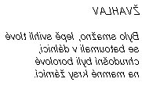

Lewis Carroll: Za zrcadlem a co tam Alenka našla
Zrcadlový dům
Na stole ležela knížka, a zatímco Alenka seděla, pozorujíc Bílého Krále (neboť on stále měla starost a byla připravena vylít naň inkoust, kdyby opět omdlel), obracela maně listy, hledajíc něco, co by dovedla číst – neboť „je to vše v jakési neznámé řeči," pravila si.
Vypadalo to takhle:

Dlouho si nad tím lámala hlavu, až ji konečně napadla skvělá myšlenka. „Vždyť je to přece zrcadlová kniha! Ovšem! A podržím-li ji proti zrcadlu, půjdou mi písmena opět správným směrem."
A toto byla báseň, kterou Alenka četla:
ŽVAHLAV
Bylo smažno, lepě svihlí tlové
se batoumali v dálnici,
chrudošní byli borolové
na mamné krsy žárnící.
„Ó synu, střez se Žvahlava,
má zuby, drápy přeostré;
střež se i Ptáka Neklava,
zuřmící Bodostre!"
Svůj chopil vorpálový meč,
jímž lita soka vezme v plen,
pak used v tumtumovou seč
a čekal divišlen.
A jak tu vzdeskné mysle kles,
sám Žvahlav, v očích plameny,
slét hvíždně v tulížový les,
a drblal rameny.
Raz dva! Raz dva! A zas a zas
vorpálný meč spěl v šmiků let.
Žvahlava hlavu za opas
a už galumpal zpét.
„Tys zhubil strastna Žvahlava?
Spěš na mou hruď, tys líten rek!"
„Ó rastný den! Avej, ava!"
Ves chortal světný skřek.
Bylo smažno, lepě svihlí tlové
se batoumali v dálnici,
chrudošní byli borolové
na mamné krsy žárnicí.
„Zdá se velmi pěkná," řekla si Alenka, když báseň dočtla, „jenom je poněkud těžce srozumitelná." (Jak vidíte, nechtělo se jí přiznati ani sobě samé, že jí nerozuměla.) „Zdá se mi jaksi naplňovati hlavu myšlenkami – jenže nevím přesně jakými. Nicméně – někdo něco zabil: tolik je na každý způsob jasné – –"
„Ale oh!" pomyslila si náhle vyskakujíc, „nepospíším-li si, budu se musit vrátit zrcadlem dřív, než si prohlédnu ostatní části domu. Nejdříve se tedy podíváme na zahradu!" V okamžiku byla z pokoje venku a seběhla ze schodů – vlastně to ani nebylo seběhnutí, nýbrž, jak si řekla, jakýsi nový vynález, jak se dostati ze schodů snadno a rychle: držela jen konečky prstů na zábradlí a lehounce se snášela dolů, aniž se schodů nohama jen dotkla; stejně se nesla vzduchem síní a byla by tímto způsobem vylétla ze dveří, kdyby se nebyla zachytila veřejí. Trochu se jí už točila hlava ze všeho toho vznášení a byla ráda, když shledala, že opět chodí přirozeným způsobem.
Hupity Dupity
„Vy tak dobře dovedete vysvětlovat slova, pane," řekla Alenka, „nebyl byste tak laskav a nevysvětlil mi smysl básně Žvahlav?"
„Dejte se s ní slyšet," řekl Hupity Dupity. „Já dovedu vysvětlit všechny básně, které byly vynalezeny – a i pěknou řádku těch, které ještě vynalezeny nebyly."
To znělo nadějně; Alenka tedy opakovala první sloku:
„Bylo smažno, lepě svihlí tlové
se batoumali v dálnici,
chrudošní byli borolové
na mamné krsy žárnící."
„To pro začátek stačí," přerušil ji Hupity Dupity: „tam je těžkých slov až dost. ,Smažno' znamená půl dvanácté dopoledne – doba, kdy se začínají smažit věci k obědu."
„To je jasné," řekla Alenka. „Ale co znamená ,svihlí'?"
„Nu, ,svihlý' znamená svižný a štíhlý. Vidíte, je to slovo jako tahací harmonika – dva významy napěchované do jednoho slova, které se zase na ty dva významy dá roztáhnout."
„A, už chápu," poznamenala Alenka zamyšleně: „a co jsou to ,tlové'?"
„Nu, ,tlové' jsou všechna zvířata, která se končí na ,tl', tak například – – ostatně příklady si najděte sama – –" (Jediný příklad, který Alenku napadal, byl Popokatepetl, to však, pokud se pamatovala, nebylo žádné zvíře.) „Ti, o kterých se zde mluví, jsou trochu podobni jezevcům a trochu ještěrkám – a trochu jsou jako vývrtky."
„To jsou jistě velmi podivná stvoření."
„To jsou," řekl Hupity Dupity, „a také si stavějí hnízda v trávníku pod slunečními hodinami – a také se živí sýrem."
„A co to je ,batoumati se'?"
„,Batoumati se' vzniklo stažením sloves batoliti se a cloumati, a značí to jít nejistě jako malé dítě a chvílemi sebou při chůzi škubnout. Někteří vykladači tvrdí, že slovo vzniklo z francouzského slova ,bateau', což značí loď, a že tedy značí jíti kolébavě jako koráb, ale to není správné."
„A ,dálnice' je asi trávník kolem slunečních hodin?" řekla Alenka, překvapena vlastní chytrostí.
„Ovšemže je. Říká se mu dálnice, víte, protože se rozkládá
daleko dopředu a daleko dozadu – –"
„A daleko na obě strany," dodala Alenka.
„Zcela správně. Nu, a dále ,chrudošný' je slovo velmi staré a znamená hrubý, neurvalý, vrtošivý a lenošný. To je další takové harmonikové slovo. Jméno Chrudoš je od něho odvozeno. – Nu, a ,borolov' je malý, nevzhledný, ošumělý ptáček, jemuž peří trčí z těla na všechny strany – něco jako oškubané oprašovátko."
„A ,mamné krsy'?." řekla Alenka. „Obávám se, že nadužívám vaší laskavosti."
„Nu, ,krsy' jsou jakýsi druh zelených vepříků; co je to ,mamný', tím si nejsem docela jist. Myslím, že to znamená něco mezi svůdný a klamný – ano, znamená to někoho, kdo svádí s úmyslem, aby oklamal."
„A co znamená ,žárnící'?"
„Nu, ,žárníti', třebaže se mínění o významu tohoto slova neshodují, znamená zářně a nyvě hleděti a přitom vydávati podivný zvuk, který je tak někde mezi bučením a pískáním, s jakýmsi kýchnutím uprostřed; ale to se musí slyšet – možná že v tamhletom lese se s tím setkáte – a když to uslyšíte jednou, budete docela spokojena. Kdo vám to odříkával takovéhle těžké krámy?"
„Četla jsem to v knize," řekla Alenka.
Carroll, Lewis: Alenčina dobrodružství v říši divů a za zrcadlem, přel. J.Císař, Aurora, Praha 1996
Jiný překlad básně Žvahlav (anglicky Jabberwocky):
Tlachapoud
Je svačvečer. Lysperní jezeleni
se vířně vrtáčejí v mokřavě.
Vetchaří hadroušci jsou roztruchleni
a selvy syští tesknoskuhravě.
„Střez se, střez Tlachapouda, milý synu,
má tlamu zubatou a ostrý dráp.
Pták Zloškrv už se těší na hostinu,
vzteklitě číhá na tě Pentlochňap."
Meč Šaršoun vytrh, pevně sevřel v dlani
a v lese stopoval ty chvostnatce,
pak pod strom Tumtum used v zadumání
a hotovil se k divé šarvátce.
A když tak zachmurděně odpočíval,
tu z huňatého lesa Tlachapoud
tam vtrhl šumohvizdně jako příval
a s vrňoukáním chtěl ho napadnout.
Ráz naráz sekal, šmik! šmik! v stínu stromů
Šaršounem mával stále lítěji,
až hlavu uťal mu a potom domů
se harcoslavně vrátil s trofejí.
„Pojď na má prsa, však to byla túra
s tím Tlachapoudem, chlap jsi od kosti.
Oj nadhernajs, oj bašta. Hola! hurá!"
a pochruchňával samou radostí.
Je svačvečer. Lysperní jezeleni
se vířně vrtáčejí v mokřavě.
Vetchaří hadroušci jsou roztruchleni
a selvy syští tesknoskuhravě.
Carroll, L.: Alenka v kraji divů a za zrcadlem, přel. Skoumalovi, Albatros, Praha 1970
|